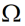

Tags in the EM Process Corner Settings File
This file contains the following tags:
-
externalStackup: Indicates that the information about the process corner needs to be taken from an external ICT or QRC file provided at the given file path.
TheexternalStackuptag contains the following tags:-
layerMap: Specifies the mapping of ICT layers to the layers in your layout.
You can specify more than one Virtuoso layers in alayerMaptag. The first argument is the ICT layer name. All the other arguments are names of the Virtuoso layers.
("ICT_layer" "layer1" "layer2" "layer3" …)
If the name of a layer is same in Virtuoso and in the ICT file, it is automatically mapped and no explicit layer mapping is required. To override auto-mapping for any layer you do not want to map, map it tonil. For example, for example,
("Metal1" nil)
In this case,Metal1is not exported to the solver. -
metalLayers: Specifies a list of metal layers embedded in the substrate. Use this tag to provide details of the metal layers that are inside the substrate but are not referenced in the external ICT or QRC file. The elevation of these layers is measured from the top of the substrate layer to the top of the metal layer below it. Therefore, it must be a negative value less than the substrate thickness. -
excludeLayers: Specifies a list of layers to be excluded. Any layer to be excluded does not get exported to the CLF file that is sent as an input to the solver. The names specified in this list must be the layer names from the ICT file, not the layers in the layout.
Though you can exclude any layer using this tag, it is particularly useful when you want to exclude a specific layer from a MIMCAP. For example, you want to send only the metal layers of a MIMCAP to the solver and exclude the capacitor and the vias connecting the capacitor to the metal layers.If you are excluding layers from a model even though the selected objects are embedded on those layers, you would also need to later exclude those objects from extracted views so that the objects present in the schematic view are used. For details on how to exclude specific instances from the extracted view, refer to Creating Extracted Views from Models.
-
-
layerElevationAdjustment: Contains a list of layer name–height adjustment value pairs that you can use to shift the MIMCAP metal layers so that the desired capacitance value for the cell is maintained. Each pair specifies the name the MIMCAP metal layer you need to shift and the value (in nanometers) by which you need to adjust the height of the MIMCAP metal layer. A positive value shifts the layer up, and a negative value shifts it down. The shift helps in emulating the effect of the high-K dielectric used between the MIMCAP plates. -
substrate: Contains a list of substrate layers. The topmost layer is listed first, followed by other layers in the same sequence in which they exist in the design.
For each substrate, you can specify the following:-
name: Name of the substrate layer - Thickness (in m) of an additional dielectric to be inserted above the bulk substrate and below the first layer specified in the ICT file
- Permittivity value (in F/m) of the dielectric to be inserted above the bulk substrate and below the first layer specified in the ICT file
- Conductivity (in S/m) of the dielectric to be inserted above the bulk substrate and below the first layer specified in the ICT file
- Resistivity (in  *cm) of the dielectric to be inserted
Conductivity and resistivity are mutually exclusive settings. You can specify either one of these. -
-
includeLPPs: Contains a list of layer-purpose pairs (LPPs) from which the shapes are to be exported to the.clfextracted model file. If not specified, only the shapes from the default drawing purpose (* drawing) are extracted. -
dielectricSimplification: Specifies how to set the permittivity and loss tangent values for the simplified dielectric layers that are created by combining all dielectric layers between two metal layers into one. This tag supports these values: -
outerCoating: Specifies the thickness and permittivity of the outer coating to be used to insulate a layer through silicon via. -
materialFile: Specifies the path to a.cmxmaterial file to be used by the simulator. A material file contains information about the various properties of the different materials used in your design. For example, a material file contains the conductivity or sheet resistance of a material at different temperature and frequencies.. In addition, it provides the names of materials to be used for different ICT layers and dielectric layers.
ThematerialFiletag contains the following tags:-
filePath: Specifies the path to the.cmxfile from where the simulation environment can load information about the different materials used in your design. For example, Clarity 3D Workbench loads the material information in the Material Manager form. -
enforceCausality: Enforces causality in material properties. When this feature is enabled, all dielectric materials are fitted with D-Sarkar Model. In this tag, you can also specify the low frequency, high frequency and base frequency values to be used by the D-Sarkar model in Clarity 3D Workbench. These values are also visible in the Material Manager form. -
materials: Specifies the metal names for the ICT layer, conductor material, and dielectric material. A conductor can either have only a conductor material, or a fill-in material, or both. -
topMaterial: Specifies the name of the material to be used for the dielectric above the top metal. -
bottomMaterial: Specifies the name of the material to be used for the dielectric below the bottom metal.
For details on how to view and edit material information in the Material Manager form and the D-Sarkar model, refer to Managing Material Information in Clarity 3D Workbench User Guide.
-
An example of a .emproc file that includes the external stackup from an ICT file follows.
externalStackup
(filePath "./gpdk180_typ.ict")
(layerMap
("Metal6" nil) ; ; Example of how to override automapping in case
; the layer is called Metal6 in Virtuoso and ICT, but should not be exported
;to the solver
("Via2MIM" "Via2") ; Via2MIM to be mapped
)
(metalLayers
("metalX" elevation -20 thickness 1 sheetResistance 0.05)
)
(excludeLayers "MetalA" "MetalC" )
)
(substrate
("Si" thickness 300 permittivity 11.9 resistivity 2)
("Si2" thickness 200 permittivity 11.8 conductivity 11)
)
(outercoating ("TSV" thickness .4 permittivity 4.9 ) ; "TSV" is one of the vias in the external
; stackup
)
(materialFile
( filePath "./myLib/test.cmx" )
(enforceCausality lowFreqCorner 0.02 highFreqCorner 2e6 baseFreq 2000)
(materials
( "Metal3" "Copper" "dielec" )
( "Metal4" "Copper" )
)
(topMaterial "MyDiel2" )
(bottomMaterial "MyDiel3" )
)
Related Topics
Configuring Process Settings for IC Layouts
Return to top